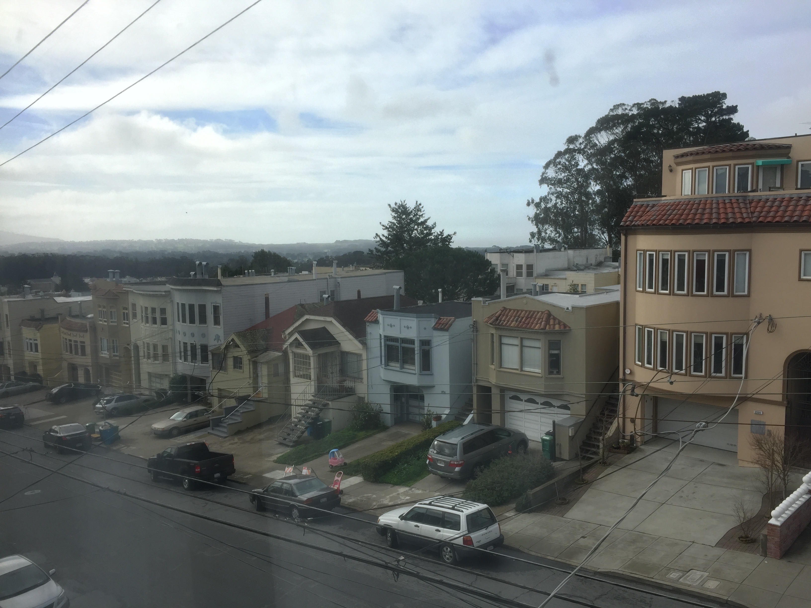
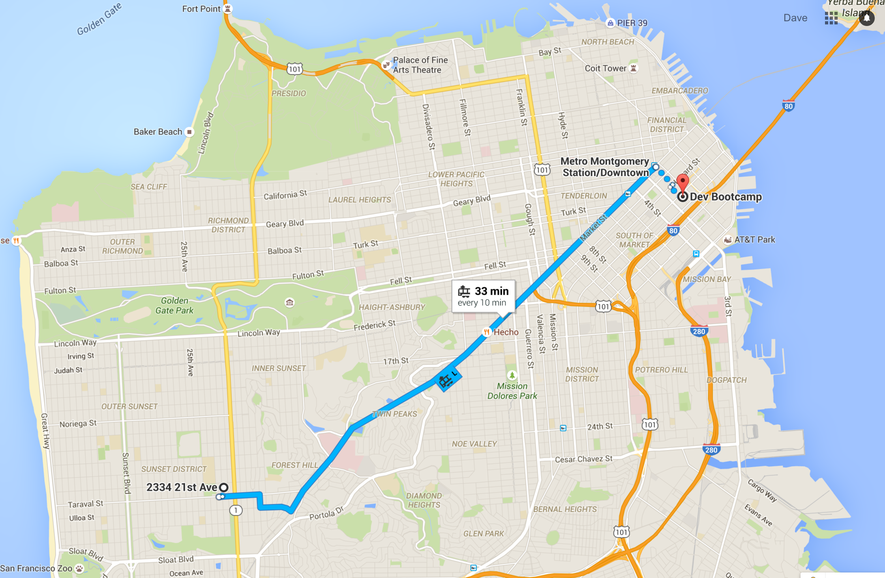
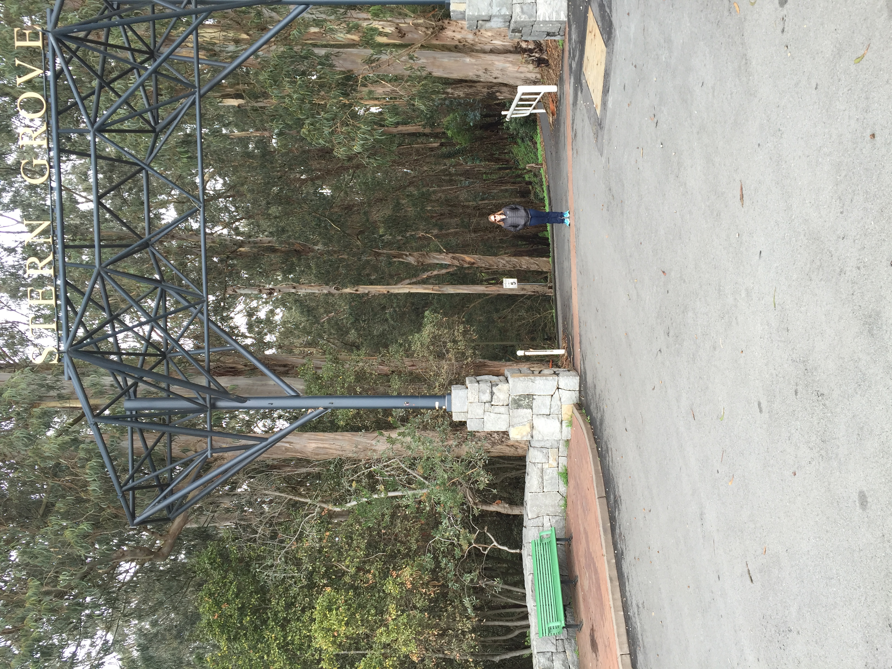
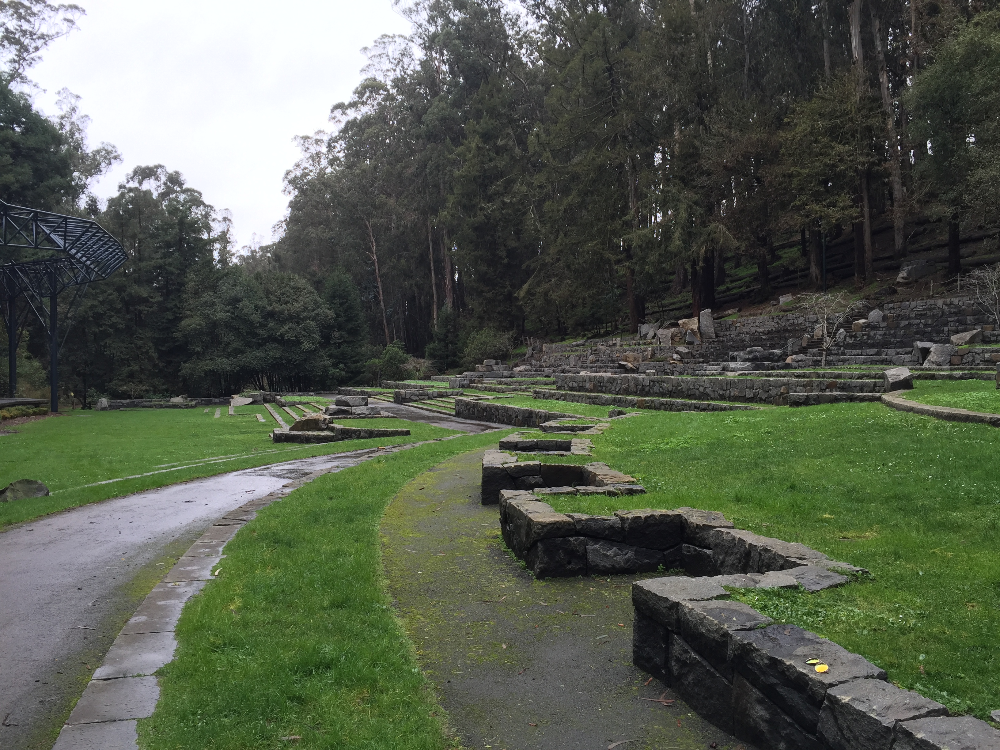
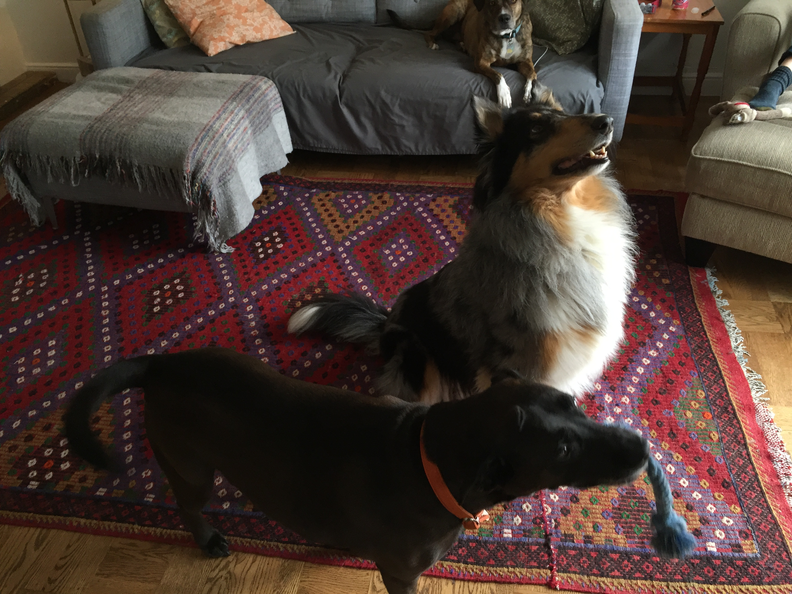

Monday Jan 18, 2016
Dave's off tickety-typing in San Francisco
Last day of Phase 0
Hey everyone! Tomorrow morning I start the onsite portion of my school, Dev Bootcamp. I'm all moved in to my new home-for-ten-weeks in San Francisco and ready to start. I'll try to post on this page here and there as I have time, with the idea of keeping any curious readers up to date with my unconventional learning adventure.
This page is part of my current website, and you can see pages I created during the online portion of school, including "technical blog" posts. This blog, though, is for family and friends, and isn't linked to from anywhere in the site. I'll keep all the posts on this page, with the newest at the top so there's only one web address to keep track of.
Now that the boring stuff is out of the way, here's the view from my room:
It's been foggy and rainy, and it'll probably stay that way, but when it's clear enough I can see the ocean out my window. To give you an idea of where I'm staying in the city - and where my school is - here's a screenshot of a map of my commute:
I'm staying on the west side in the Sunset district. The joke around here is that it's so foggy you never actually see a good sunset. That route is mostly the L train, where I get on one block from my spot and it dumps me 3 blocks from the school. I'm in a really cool neighborhood - doesn't even feel like I'm in the middle of a city. There are several parks within walking distance, here's one Kate and I walked down to today:


Not bad! So I'm staying with a couple who are friends of friends and airbnb their rooms out frequently. They're very welcoming and Kate is encouraged to bring Raja when she visits, so I found a good spot. Raja has made friends this weekend with the dogs who live here, Moxie and Gypsy:
Gypsy is the black mutt, Moxie is the sheepdog.
Kate helped me get all set up for the week, including making sure I had a meal plan and groceries, so I'm good to go. I'm really excited to start all the coding madness, and I'll post again about the site with pics once I'm settled into the program. Thanks for reading!